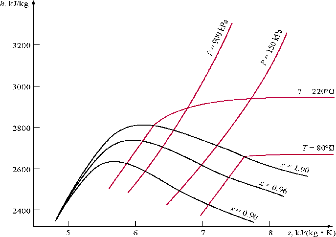

(fragments of the CD that comes with
Cengel&Boles's book "Thermodynamics", 3-d edition, McGraw-Hill,
1998)
Class notes (continued)

Shown above is the enthalpy-entropy diagrams
for water. The h-s diagram is called the Mollier Diagram, is an useful aid in
solving steam power plant problems.